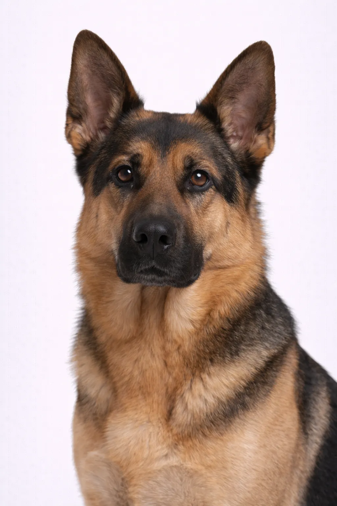

German Shepherd
Built for adventure \u2014 the German Shepherd needs plenty of exercise and mental stimulation.
22-26 in
48-88 lbs
Valutazioni della Razza
Temperamento
Panoramica
German Shepherds are working dogs developed for herding sheep. Because of their strength, intelligence, trainability, and obedience, they're often preferred for many types of work including police, military, and search-and-rescue.
Temperamento
GSDs are confident, courageous, and smart. They're willing to put their life on the line for loved ones. They can be aloof with strangers but are loyal and loving with family.
Salute
Prone to hip and elbow dysplasia, degenerative myelopathy, and bloat. Regular vet checkups are important. Buy from reputable breeders who test for genetic conditions.
Esercizio
Razza ad alta energia che richiede un esercizio quotidiano vigoroso — almeno un'ora di attività. Dà il meglio di sé con famiglie attive che amano le attività all'aperto. La stimolazione mentale attraverso l'addestramento e i giochi interattivi è altrettanto importante. Senza un esercizio adeguato, possono sviluppare comportamenti indesiderati.
Questa Razza Fa per Te?
Ideale Per
- Experienced dog owners
- Active families
- Those wanting a protective dog
- People with time for training
- Homes with yards
Non Ideale Per
- First-time owners
- Sedentary lifestyles
- Those away from home often
- Small apartments
Il Nostro Verdetto: Il German Shepherd è un cane da lavoro fedele, intelligente e versatile. È più adatto a proprietari esperti in grado di offrire una guida ferma, un addestramento costante e tanto esercizio. Non è ideale per i proprietari alle prime armi o per la vita in appartamento.